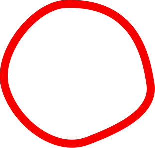
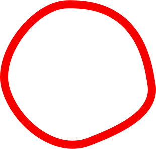

ТАСС сообщил о сценариях обновления Старицы

На днях молодые архитекторы из Школы дизайна НИУ ВШЭ презентовали местным властям и бизнесу результаты исследования городской среды Старицы и предложили актуальные сценарии ее развития. В том числе — оформить центр города на набережной левого берега Волги, наполнить город арт-объектами и на входе в пещеру со «старицким мрамором» сделать городской сад. Об этом 8 марта сообщил ТАСС.
Старицу, основанную в 1297 году, планируют сделать новым туристическим магнитом федерального уровня. Последние годы Старицкий округ активно развивается: в 2024 году он принял 105 тыс. человек. «Новый город» в рамках развития туристического комплекса «Старицкий посад» восстановит в городе более десятка руинированных зданий. В течение ближайших лет здесь откроются отели, которые смогут принимать 30 тыс. туристов в год, появятся новые рестораны, выставочные пространства, торговые площади для местных промыслов, будет создано 300 новых рабочих мест.
Результаты анализа городской среды, которые представили молодые архитекторы, показали, что Старица развивается и имеет большой туристический потенциал. Так, студенты отметили, что с начала 10-х гг. город активно развивается, что отразилось в позитивной динамике индекса «Качество городской среды» — в 2023 году Старица получила 206 баллов, в то время как в 2019 году было всего 184 балла. Детальный анализ показал, что Старице нужен «светский» центр города, на эту роль лучше всего подходит набережная левого берега Волги. Ключевые видовые здания вдоль променада стоят в руинах и утратили свою функцию. Это бывшая швейная фабрика и торговые палаты купца Филиппова — они войдут в новый комплекс «Старицкий посад», за который отвечает компания «Новый город».
Теперь молодые архитекторы приступают к созданию дипломных работ — проектов ревитализации и организации среды по предложенным им объектам, в том числе ансамблю в старицком Зарядье и входу в каменоломни со стороны деревни Сельцо.
В июне магистранты НИУ ВШЭ под руководством известного архитектора Владимира Кузьмина снова приедут в Старицу. Их идеи лягут в основу реальных технических заданий для профессиональных архитектурных бюро, задействованных в городе.
Намеченные преобразования могут кардинально изменить восприятие Старицы — из малозаметного провинциального города она превратится в важную точку на культурной и туристической карте страны. Важно, что развитие инфраструктуры идет рука об руку с бережным отношением к исторической ткани города. Архитекторы подчеркивают необходимость «мягкой ревитализации» — сохранения подлинности мест, в том числе характерной застройки, фактуры фасадов и уличной сетки, при внедрении современных функций и сервисов.
Подпись под изображением во всю ширину странички
Местные жители с интересом следят за инициативами студентов и проектами «Нового города». Власти округа отмечают, что включение молодых специалистов в проектирование помогает сформировать свежий, актуальный взгляд на развитие территории. Это особенно важно для небольших исторических городов, где необходим баланс между сохранением наследия и созданием новых точек притяжения для молодежи, предпринимателей и туристов.
Кроме того, в ближайшие годы планируется улучшение транспортной доступности региона: рассматривается проект реконструкции подъездных путей, развитие речного туризма и запуск навигационного маршрута вдоль Волги. Всё это поможет не только увеличить туристический поток, но и вовлечь в развитие округа новые бизнесы, образовательные инициативы и культурные события, превращая Старицу в живой и современный малый город с уникальным лицом.